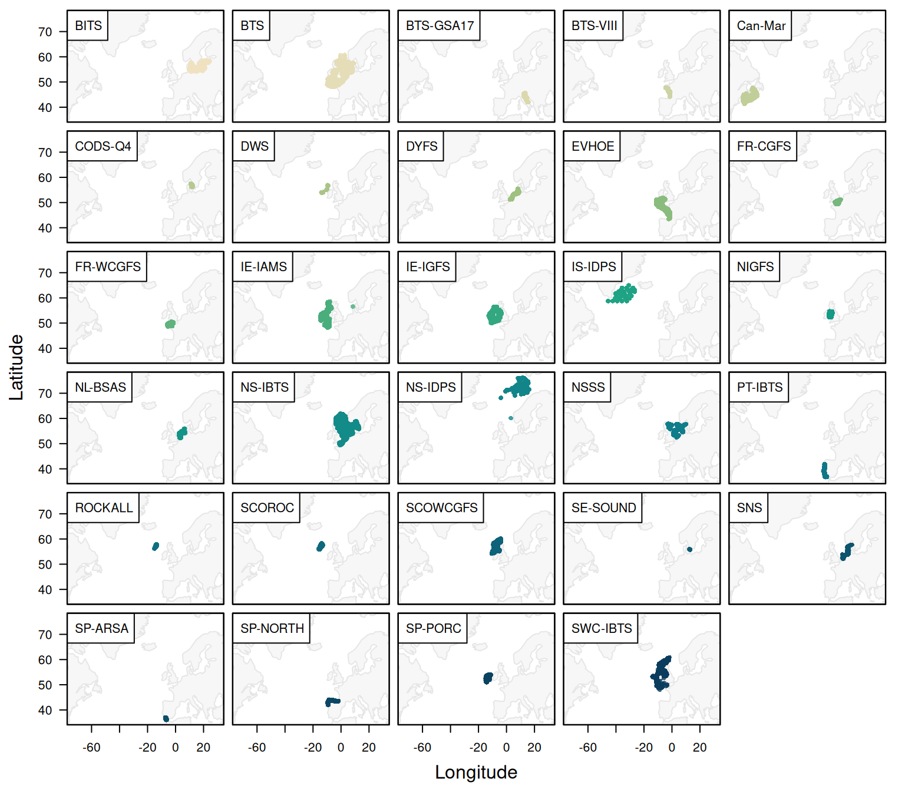
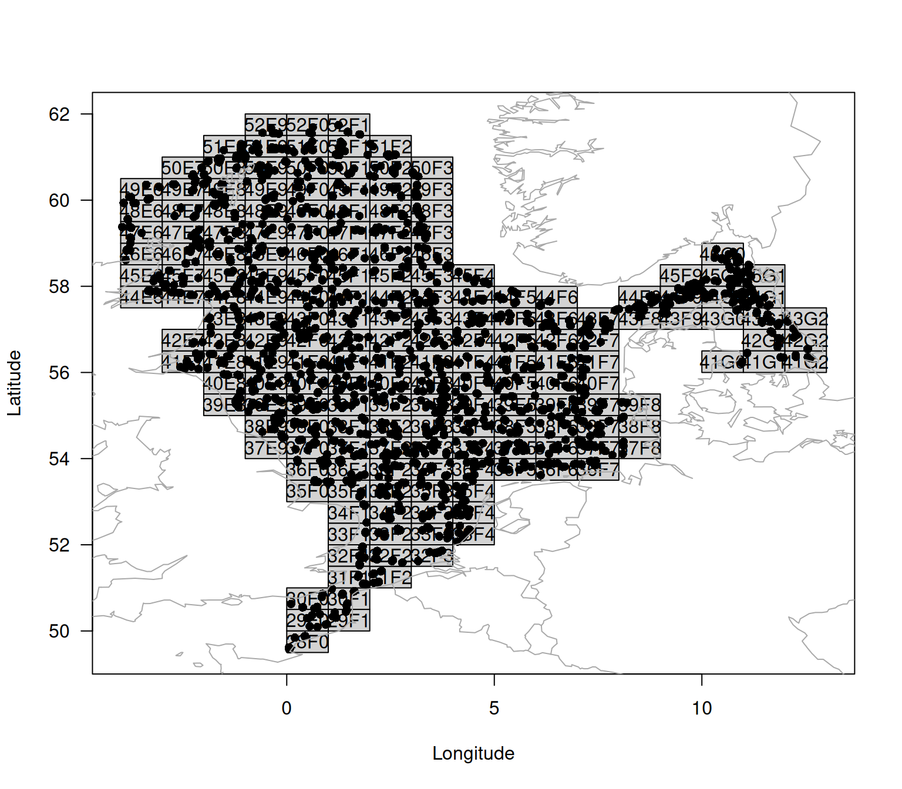

A Step-by-step guide to working with the ICES DATRAS database using DATRASextra
Source:vignettes/datrasextra-tutorial.Rmd
datrasextra-tutorial.RmdThe goal of the DATRASextra is to make it easier to work with the ICES DATRAS database in R. The package provides user-friendly, well-document functions, detailed vignettes, and functionality that extends the powerful core tools of the DATRAS R package.
This vignette introduces a typical workflow for working with ICES DATRAS survey data, from installing DATRASextra and downloading survey information to reading, cleaning, summarising, and plotting the data.
Outline
- Install DATRASextra
- Download ICES DATRAS survey data
- Read downloaded data into R
- Clean and inspect the data
- Calculate total numbers and weight by haul
- Summary
- References
Install DATRASextra
To get started, install the latest development version of DATRASextra from GitHub:
## Install the package
remotes::install_github("tokami/DATRASextra")Then load the package into your R session:
## Load the package
library(DATRASextra)Download DATRAS survey data
The DATRAS database is a large compilation of scientific bottom-trawl survey data from across the Northeast Atlantic. You can get an overview of the available surveys with:
## List available DATRAS surveys
list_surveys()
#> survey years quarters
#> 1 BITS 1991-2025 1(35), 2(10), 3(6), 4(34)
#> 2 BTS 1985-2024 1(19), 3(40)
#> 3 BTS-GSA17 2016-2023 4(8)
#> 4 BTS-VIII 2007-2024 4(15)
#> 5 Can-Mar 1970-2021 1(9), 3(52), 4(8)
#> 6 DWS 2006-2009 3(3), 4(1)
#> 7 DYFS 1985-2024 3(40), 4(40)
#> 8 EVHOE 1997-2024 4(28)
#> 9 FR-CGFS 1988-2024 4(37)
#> 10 FR-WCGFS 2018-2024 3(7)
#> 11 IE-IAMS 2016-2024 1(9), 2(8)
#> 12 IE-IGFS 2003-2024 4(22)
#> 13 IS-IDPS 2009-2009 3(1)
#> 14 NIGFS 2005-2024 1(20), 4(18)
#> 15 NL-BSAS 2019-2024 3(6), 4(5)
#> 16 NS-IBTS 1965-2025 1(61), 2(14), 3(34), 4(9)
#> 17 NS-IDPS 2009-2016 1(1), 3(3)
#> 18 NSSS 2008-2024 4(17)
#> 19 PT-IBTS 2002-2023 4(19)
#> 20 ROCKALL 1999-2009 3(9)
#> 21 SCOROC 2011-2024 3(14)
#> 22 SCOWCGFS 2011-2025 1(14), 4(14)
#> 23 SE-SOUND 2011-2023 1(13), 3(7), 4(6)
#> 24 SNS 1985-2024 3(36), 4(16)
#> 25 SP-ARSA 1996-2024 1(22), 4(21)
#> 26 SP-NORTH 1990-2024 3(9), 4(35)
#> 27 SP-PORC 2001-2024 3(24), 4(5)
#> 28 SWC-IBTS 1985-2010 1(26), 2(1), 4(20)
#> description
#> 1 Baltic International Trawl Survey
#> 2 Beam Trawl Survey
#> 3 Beam Trawl Survey - SoleMon (Adriatic survey) - GSA17
#> 4 Beam Trawl Survey - Bay of Biscay (VIII)
#> 5 Canadian Maritimes trawl survey
#> 6 Deepwater Surveys
#> 7 Inshore Beam Trawl Survey
#> 8 French Southern Atlantic Bottom Trawl Survey
#> 9 French Channel Ground Fish Survey
#> 10 French Western English Channel Ground Fish Survey
#> 11 Irish Anglerfish and Megrim Survey
#> 12 Irish Ground Fish Survey
#> 13 Irminger Sea International Deep Pelagic Survey
#> 14 Northern Ireland Ground Fish Survey
#> 15 Netherlands Industry survey on Turbot and Brill
#> 16 North Sea International Bottom Trawl Survey
#> 17 Norwegian Sea International Deep Pelagic Survey
#> 18 North Sea Sandeel Survey
#> 19 Portuguese International Bottom Trawl Survey
#> 20 Scottish Rockall Survey - old (until 2010)
#> 21 Scottish Rockall Survey - new (from 2011)
#> 22 Scottish West Coast Groundfish Survey (from 2011)
#> 23 Sweden Sound Survey
#> 24 Sole Net Survey
#> 25 Spanish Gulf of Cadiz Bottom Trawl Survey
#> 26 Spanish North Coast Bottom Trawl Survey
#> 27 Spanish Porcupine Bottom Trawl Survey
#> 28 Scottish West Coast Bottom Trawl Survey (up to 2010)Or visually with:
## Plot available DATRAS surveys
plot_datras_overview(by_survey = TRUE, multi_panels = TRUE)
The download_datras() function can be used to download
data for one or more surveys. If both surveys and
years are left as NULL, all available surveys
and years are downloaded. Because the database is large, a full download
can take some time.
In many cases, however, only a subset of the database is needed. The
surveys and years arguments allow you to
restrict the download to selected surveys and years. For example, the
2023 SNS survey can be downloaded into a temporary
directory with:
## Select survey
survey <- "SNS"
## Create temporary directory
tmp <- tempdir()
## Download SNS data for 2023
download_datras(surveys = survey, years = 2023, dir = tmp)Note that download_datras() does not load the data
directly into R. Instead, it downloads, compresses, and stores the files
on disk. If no directory is specified via dir, the files
are saved to the current working directory, which you can inspect with
getwd().
Downloaded files are stored as zipped DATRAS exchange files. If a year is requested for which a survey was not conducted, an empty file may be created. The reading functions described below automatically ignore empty files.
DATRAS typically contains three main data tables:
-
HH: haul- or station-level metadata, such as position, time, gear, and environmental information -
HL: species-level catch-at-length and subsampling data -
CA: individual-level biological data, such as length, weight, sex, maturity, and age
The CA table can be large and may not be needed for all
analyses. In such cases, setting download_ca = FALSE can
reduce download time and memory use. Similarly, when the focus is on
individual biological data rather than catch-at-length information,
HL can be omitted by setting
download_hl = FALSE. See the
vignette("articles/exploring-length-at-age") for an example
when working only with CA might be useful.
Read DATRAS data into R
The downloaded survey files can then be read into R with
read_datras():
surv0 <- read_datras(file.path(tmp, survey))The path can point either to a single file or to an entire directory containing multiple survey-year files.
To avoid relying on an internet connection for the remainder of this
vignette, we use the example data set dab included in
DATRASextra:
surv0 <- dabClean and inspect DATRAS data
The object returned by read_datras() has class
datras_raw and is intentionally kept close to the original
DATRAS exchange format. In many analyses it is useful to clean the data
first, for example by restricting the data set to valid hauls only.
This can be done manually with subset(), but
DATRASextra also provides the convenience function
clean_datras() for applying common cleaning steps and
creating relevant subsets:
surv <- clean_datras(surv0)Another useful feature of clean_datras() is that it can
impute missing depth information where appropriate.
After cleaning, it is often sensible to check for invalid or unusual
values. This can be done with check_outliers():
surv <- check_outliers(surv, pct = TRUE)
#> table var severity one
#> 1 CA Age extreme 5
#> 2 HH Depth extreme 50
#> 3 HH DoorSpread extreme 57
#> 4 HH HaulDur extreme 32
#> 5 CA IndWgt extreme 28
#> 6 CA LngtClas extreme 149
#> 7 HL LngtCm extreme 451
#> 8 HH WingSpread extreme 34The function returns a summary of hauls with invalid values and, when
pct = TRUE, also flags unusually extreme values in selected
variables.
More detailed information is available in the attributes added by the function:
head(attr(surv, "outlier_report"))
#> table var row haul.id value
#> 1 HH HaulDur 65 NS-IBTS:2020:1:DE:26D4:GOV:209:52 31
#> 2 HH HaulDur 75 NS-IBTS:2020:1:DE:26D4:GOV:238:60 31
#> 3 HH HaulDur 88 NS-IBTS:2020:1:DE:26D4:GOV:40:12 31
#> 4 HH HaulDur 145 NS-IBTS:2020:1:NL:64T2:GOV:38F306:6 32
#> 5 HH HaulDur 245 NS-IBTS:2020:1:FR:35HT:GOV:Y0184:59 16
#> 6 HH HaulDur 255 NS-IBTS:2020:1:GB-SCT:748S:GOV:23:23 31
#> reason method severity
#> 1 outside 0.01-0.99 percentiles by Survey+Quarter+Gear+Ship percentile extreme
#> 2 outside 0.01-0.99 percentiles by Survey+Quarter+Gear+Ship percentile extreme
#> 3 outside 0.01-0.99 percentiles by Survey+Quarter+Gear+Ship percentile extreme
#> 4 outside 0.01-0.99 percentiles by Survey+Quarter+Gear+Ship percentile extreme
#> 5 outside 0.01-0.99 percentiles by Survey+Quarter+Gear+Ship percentile extreme
#> 6 outside 0.01-0.99 percentiles by Survey+Quarter+Gear+Ship percentile extreme
#> p_lo p_hi thr_lo thr_hi group
#> 1 0.01 0.99 20.00 30.87 NS-IBTS\r1\rGOV\r26D4
#> 2 0.01 0.99 20.00 30.87 NS-IBTS\r1\rGOV\r26D4
#> 3 0.01 0.99 20.00 30.87 NS-IBTS\r1\rGOV\r26D4
#> 4 0.01 0.99 16.56 31.00 NS-IBTS\r1\rGOV\r64T2
#> 5 0.01 0.99 17.36 31.00 NS-IBTS\r1\rGOV\r35HT
#> 6 0.01 0.99 16.00 30.00 NS-IBTS\r1\rGOV\r748SA shorter list of affected hauls can be obtained with:
head(attr(surv, "outlier_hauls"))
#> [1] "NS-IBTS:2020:1:DE:26D4:GOV:209:52"
#> [2] "NS-IBTS:2020:1:DE:26D4:GOV:238:60"
#> [3] "NS-IBTS:2020:1:DE:26D4:GOV:40:12"
#> [4] "NS-IBTS:2020:1:NL:64T2:GOV:38F306:6"
#> [5] "NS-IBTS:2020:1:FR:35HT:GOV:Y0184:59"
#> [6] "NS-IBTS:2020:1:GB-SCT:748S:GOV:23:23"For the example data set used here, no clearly invalid values were detected, so we proceed without further filtering.
A quick overview of the cleaned survey data can be obtained with:
plot(surv)
#> NULL
Calculate total numbers and weight by haul
A commonly used quantity in survey analysis is the total abundance or biomass per haul. These values are often used to derive survey indices, community indicators, or biodiversity metrics.
To calculate total numbers and weight by haul, the information in the
HL table first needs to be raised to the haul level. A
convenient first step is to add numbers-at-length:
surv <- add_numbers_at_length(surv)This adds a matrix N to the HH table,
containing the estimated numbers in each length class for each haul. The
length classes can be modified with the cm_breaks or
by arguments.
The total number by haul can then be obtained by summing over length classes:
surv <- add_total_numbers_by_haul(surv)By default, this adds a single column HaulN to the
HH table. More generally, custom bins can be specified via
length_cuts. In that case, the result may contain separate
totals for broader user-defined length groups.
If species-specific length and weight information are available in
CA, or suitable length-weight relationships are available
in the species_info table, the numbers can also be
converted to weight:
surv <- add_total_weight_by_haul(surv)This adds HaulWgt to the HH table,
containing the total estimated weight by haul. As for abundance, custom
length-group summaries can be generated when length_cuts is
used.
Summary
This vignette introduced a basic workflow for working with ICES DATRAS survey data in DATRASextra. It showed how to
- install and load the package,
- inspect available DATRAS surveys,
- download selected survey data,
- read DATRAS exchange files into R,
- clean and check the data,
- visualise the resulting survey information, and
- derive haul-level abundance and biomass summaries.
These functions provide a practical starting point for exploratory analyses, survey summaries, and the preparation of DATRAS data for downstream applications such as indicator development, biodiversity analyses, and stock assessment.